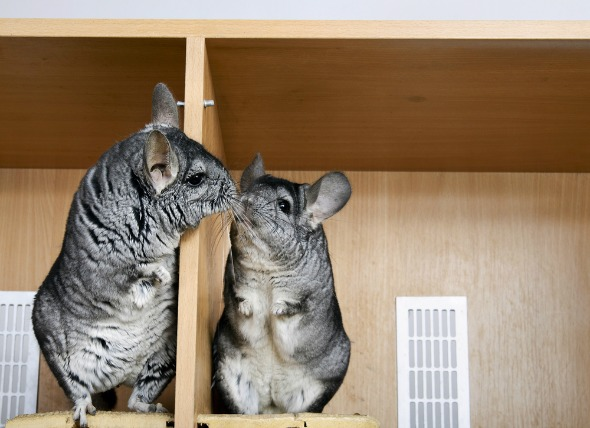

We are a non-profit organization dedicated to the study of chinchillas as well as the education and dissemination of information pertaining to owning chinchillas as pets. Our primary foster home is in Sunnyvale, California. The rescue branch of our organization was started a few years ago, by one of the founders of CA Chins and a couple dedicated volunteers. The need for a chinchilla rescue group became apparent as we watched the high tech economy plummet leaving many people without jobs and forced to leave the Bay Area. The leaders that run the rescue organization have more than 37 years of combined experience with many of their own chinchillas as well as rescues.
